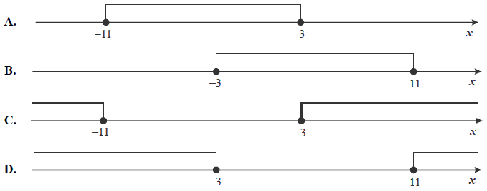

⠀
Jesteś tutaj:
Szkoła
→
Wartość bezwzględna
→
Nierówności z wartością bezwzględną
◀ Równania z wartością bezwzględną
Równania z kilkoma wartościami bezwzględnymi ▶
Nierówności z wartością bezwzględną
Zadania z nierówności z wartością bezwzględną są również w dziale
Interpretacja geometryczna wartości bezwzględnej
.
Wskaż liczbę, która spełnia nierówność \(|3x-4|\le x+1\).
A.
\(-2\)
B.
\(-1\)
C.
\(0\)
D.
\(1\)
D
Zbiór \((-\infty ,-8\rangle \cup \langle -4,+\infty )\) jest rozwiązaniem nierówności:
A.
\( |x-6|\le 2 \)
B.
\( |x-6|\ge 2 \)
C.
\( |x+6|\le 2 \)
D.
\( |x+6|\ge 2 \)
D
Ile rozwiązań w zbiorze liczb rzeczywistych ma nierówność:
\(|x+3| \le 0\)
?
A.
\( 0 \)
B.
\( 1 \)
C.
\( 2 \)
D.
nieskończenie wiele
B
Wskaż rysunek, na którym jest przedstawiony zbiór rozwiązań nierówności \(|x + 4| \le 7\). 
A
Wskaż liczbę, która spełnia nierówność \( |1 - 2x| \lt x \)
A.
\( x=0 \)
B.
\( x=0{,}5 \)
C.
\( x=1 \)
D.
\( x=2 \)
B
Wskaż nierówność, którą spełnia liczba \(5\sqrt{3}\)
A.
\( |x-1|\lt 2 \)
B.
\( |x-2|\lt 3 \)
C.
\( |x-3|\lt 4 \)
D.
\( |x-4|\lt 5 \)
D
Rozwiązaniem nierówności
\(|x-2|\lt 5\)
jest zbiór
A.
\( (-3,7) \)
B.
\( (-\infty , 3)\cup (7,+\infty) \)
C.
\( (3,7) \)
D.
\( (-\infty , -3)\cup (7,+\infty) \)
A
Wskaż nierówność, którą spełnia liczba \(\pi \)
A.
\( |x+1|>5 \)
B.
\( |x-1|\lt 2 \)
C.
\( \left |x+\frac{2}{3} \right |\le 4 \)
D.
\( \left |x-\frac{1}{3} \right |\ge 3 \)
C
Suma przedziałów \( (-\infty ,-11)\cup (7,+\infty) \) jest zbiorem rozwiązań nierówności:
A.
\(|x+1|>10 \)
B.
\(|x+2|>9 \)
C.
\(|x-2|>11 \)
D.
\(|x+1|\lt 10 \)
B
Zbiorem rozwiązań nierówności \( |x-2| > 7 \) jest przedział:
A.
\((2,9) \)
B.
\((-5,9) \)
C.
\((-\infty,-5)\cup(9,+\infty) \)
D.
\(( -\infty,-5 \rangle\cup\langle 9,+\infty ) \)
C
Najmniejszą liczbą całkowitą dodatnią spełniającą nierówność \(|x+4{,}5|\ge 6\) jest
A.
\( x=1 \)
B.
\( x=2 \)
C.
\( x=3 \)
D.
\( x=6 \)
B
◀ Równania z wartością bezwzględną
Równania z kilkoma wartościami bezwzględnymi ▶